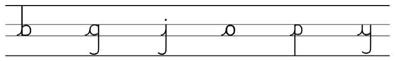

Nakili herufi b, g, j, o, p na y zinazoungwa upande wa kushoto tu; chunguza mfano wa mstari ulioinuliwa kabla ya kujibu; tumia eneo la kuandikia, kibodi au Breli.

Kuandika herufi kwa mwandiko wa kuunga Zoezi la sita 1. Nakili herufi hizi zinazoungwa upande wa kushoto tu: 2. Nakili herufi hizi zinazoungwa upande wa kushoto na kulia: 3. Nakili herufi hizi ambazo haziungwi upande wowote:
Nakili herufi b, g, j, o, p na y zinazoungwa upande wa kushoto tu; chunguza mfano wa mstari ulioinuliwa kabla ya kujibu; tumia eneo la kuandikia, kibodi au Breli.

Nakili herufi a, ch, d, e, h, i, k, l, m, n, t, r, u, v na w zinazoungwa kushoto na kulia; chunguza mfano wa mstari ulioinuliwa kabla ya kujibu; tumia eneo la kuandikia, kibodi au Breli.
a · ch · d · e · h · i · k · l · m · n · t · r · u · v · w
Nakili herufi f, s na z ambazo haziungwi upande wowote; chunguza mfano wa mstari ulioinuliwa kabla ya kujibu; tumia eneo la kuandikia, kibodi au Breli.
f · s · z